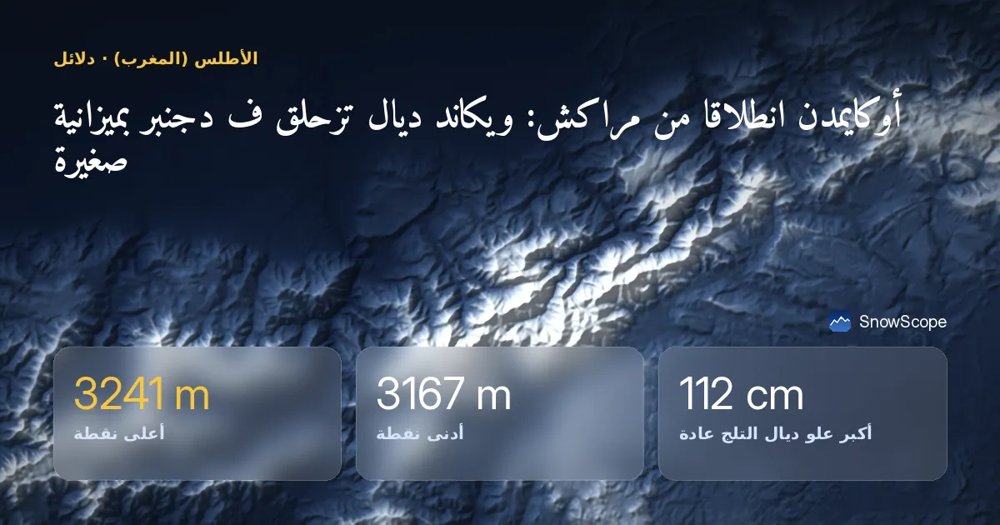

أوكايمدن انطلاقا من مراكش: ويكاند ديال تزحلق ف دجنبر بميزانية صغيرة
من مراكش، أوكايمدن هي المحطة ديال التزحلق الأقرب: 50 كم بخط مستقيم، حسب الحساب ديالنا بين البلاصتين. ف دجنبر، هي مقامرة رخيصة، بشرط تمشي فالوقت المناسب وتعرف أشنو تقدر تتأكد منو من قبل وأشنو لا.
شوف توقعات التلج مباشرة ديال Oukaimden ski resort فالتطبيق ديال SnowScopeالعلو ديال التلج، التنبيهات والخريطة 3D، فابور.
المحطة فشوية أرقام
حسب Wikipédia، المحطة ديال أوكايمدن كتمتد من 2600 م حتى 3200 م ديال العلو وفيها ستة تيليسييجات. هاد العلو هو اللي كيفسر علاش الجبل يمكن يكون أبيض ومراكش، فالتحت، باقية تحت الشمس.
كنتبعو التلج ف2600 م و2929 م و3258 م. فشتوة عادية، أول تلج كيبقى كيهبط حدا 5 نونبر.

أشنو كنعرفو على الأثمنة، وأشنو ماكنعرفوش
نهار 13 نونبر 2026، مالقيناش حتى تعريفة رسمية أونلاين ديال التيليسييجات ديال أوكايمدن: الفورفيات والكيراء كيتخلصو فعين المكان. فهاد السبب ماكنعطيوش رقم، بدل ما نقلبو واحد من موقع ماشي رسمي.
اللي كيصنع حقيقة ميزانية الويكاند هو بالأكثر الطرانسبور من مراكش والليلة فعين المكان إلا نعستي فالجبل. قارن فعين المكان وسول على الأثمنة قبل ما تكري المعدات.

فوقاش تمشي ف دجنبر
الكالندري كيهم أكثر من كلشي. فنص الجبل، الشتوة العادية فيها 12 سم نهار فاتح دجنبر، 16 سم نهار 15 و24 سم نهار 31. النسبة ديال الشتوات اللي فيها 25 سم ولا كثر كتزيد من 33 % نهار فاتح دجنبر ل43 % نهار 15 و48 % نهار 31.
النص الثاني ديال الشهر إذن شوية أكثر أمانا من النص الأول. ولكن القاعدة الحقيقية فأوكايمدن هي تمشي مباشرة من بعد ما يتلج: حالة وحدة تقدر تبدل بيست عاري لنهار ديال تزحلق.
الخطة ب إلا التلج ناقص
ف20 % من الشتوات، نص الجبل كيكون تقريبا عاري (أقل من 5 سم) نهار 15 دجنبر. إلا وقع هاد الشي، الجبل يبقى زوين على الرجلين: دير معاك سباط ديال المشي وحوايج سخونين، العلو هو بحال محطة ألبية. وأجل التزحلق لآخر الشتوة: التلج كيوصل للذروة فمارس، ب53 سم فنص الجبل فشتوة عادية.
نصايح للي كيتزلجو
- امشي فظرف يومين ولا تلاتة من بعد ما يتلج، وشوف الخريطة ديالنا قبل ما تخرج من مراكش.
- طريق الجبل: خرج بكري، سوق بحذر، وسول على حالة الطريق من بعد عاصفة.
- سول على أثمنة الفورفي والكيراء قبل ما تخلص: ماكاينش تعريفة رسمية أونلاين.
- دير معاك شي حاجة سخونة: فوق 2600 م كتجمد مباشرة منين الشمس كتخبى ورا القمم.
المراجع والمصادر
- Wikipedia, Oukaïmeden (read 13 November 2026) en.wikipedia.org/wiki/Ouka%C3%AFmeden
- OpenSkiMap (mapped lifts and runs) openskimap.org/
على هاد الأرقام
أرقام التلج: التاريخ ديال التلج ديال SnowScope، 46 شتوة اللي فاتت (1980-81 حتى ل 2025-26) فالعلوات المكتوبة (التحت، الوسط، الفوق)، إعادة بناء ديال التلج اللي فات لمنطقة مصححة بالعلو (على أساس ERA5-Land؛ Snow_Hydro 1 كم للمغرب)، ماشي البلاغات ديال المحطة. التلج دابا: الخريطة ديال SnowScope. التيليسييجات والبيستات والعلوات: الخرايط ديال OpenSkiMap. الأثمنة: الصفحات الرسمية اللي لتحت، متشافة نهار 13 نونبر 2026؛ الأثمنة الدينامية كتبدل مع التاريخ والطلب.
كيفاش تستاشهد بهاد المقال
للبحث، التعليم ولا الصحافة: الأرقام والرسومات تقدر تعاود تخدم بيهم بحرية تحت CC BY 4.0 مع هاد الاستشهاد.
SnowScope (2026), أوكايمدن انطلاقا من مراكش: ويكاند ديال تزحلق ف دجنبر بميزانية صغيرة, https://snowscope.app/blog/ar/2026/11/oukaimeden-depuis-marrakech-week-end-ski-decembre-budget.html, تشاف ف 2026-11-14
SnowScope (Atlas Labs). (2026, November 14). أوكايمدن انطلاقا من مراكش: ويكاند ديال تزحلق ف دجنبر بميزانية صغيرة. SnowScope snow reports. https://snowscope.app/blog/ar/2026/11/oukaimeden-depuis-marrakech-week-end-ski-decembre-budget.html
BibTeX
@misc{snowscope2026oukaimedendepuismarrakec,
author = {{SnowScope (Atlas Labs)}},
title = {أوكايمدن انطلاقا من مراكش: ويكاند ديال تزحلق ف دجنبر بميزانية صغيرة},
year = {2026},
month = nov,
howpublished = {\url{https://snowscope.app/blog/ar/2026/11/oukaimeden-depuis-marrakech-week-end-ski-decembre-budget.html}},
note = {Published 2026-11-14 13:29 UTC; accessed 2026-11-14}
}· CC BY 4.0 · الطريقة، الداتا والأدوات →
Oukaimden ski resort: التلج والحرارة حسب العلو، هاد الشتا مقارنة مع اللي فاتت (الأدوات) →
تابع Oukaimden ski resort
فابور: ميساج ملي يجي التلج، والتوقعات كل صباح.
تقارير أخرى ديال التلج

Michlifen، حدا إفران، التلج فيها كيجي نوبات قصار ماشي موسم كامل. شنو كيبينو 46 شتوة اللي فاتو، علاش العلو العادي صفر، وكيفاش تكون تما فالنهارات المزيانين.

فرص التلج ف دجنبر من 46 شتوة وأثمنة النهار اللي تأكدنا منهم: Ski Cooper 49 $، Les 3 Vallées 75.70 €، Oukaïmeden بلا تعريفة رسمية. فين كتخدم نهار تزحلق رخيص ف دجنبر.

Valloire-Valmeinier كتوفر على 131 كم ديال البيست، واحتمال 98 % يكون العلو ديال التلج 30 سم فـ وسط المحطة فـ نص دجنبر.